12 best quick and easy recipes: Find here list of 12 best quick and easy e recipes (Vegetarian & Non Vegetarian ) like bread poha, egg in a hole,chilli paneer , master ke kabab and many more with key ingredients and how to make process.
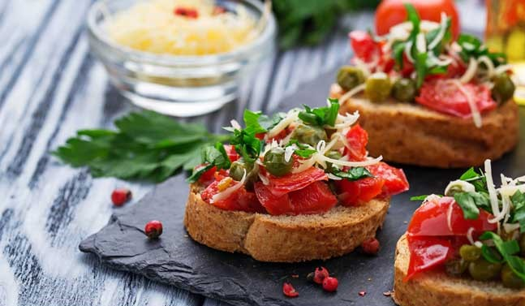Quick & Easy Recipes: is your to-do list getting in the middle of your food dreams? Well, we've always believed that good food is not about long hours in the kitchen. Our quick and easy recipes are perfect for days when you are in no mood of elaborate cooking or to soothe away those untimely hunger pangs. Indulge your senses with these terribly easy recipes and surprise everyone. From rich dips to crisp bites and sinful sweets, our collection of quick & easy appetizers have you covered for any occasion.Cling to these quick tips for speedy meals; stock your pantry with ingredients that make cooking a breeze. Simple and speedy bites without compromising on the flavors. We tell you some amazing recipes like French toast, yogurt crunch pudding, 3-minute chocolate cake, garlic egg fried rice, et al, all of which are quick and easy to make
Saucy bread and cheese sandwiches dipped in a herby egg white batter and pan fried. A quick and healthy option for your breakfast on-the-go or a mid night snack.
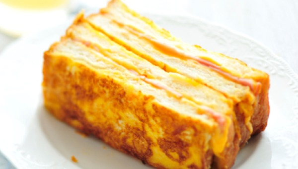Best quick and easy recipes: Saucy bread and cheese sandwiches dipped in a herby egg white batter
Spice is nice. Cauliflower florets cooked with an oriental tang. A quick serving for those unannounced guests! This delightful vegetarian recipe will help keep you hunger pangs away. It has a mix of spices that will ensure your palates are satisfied.
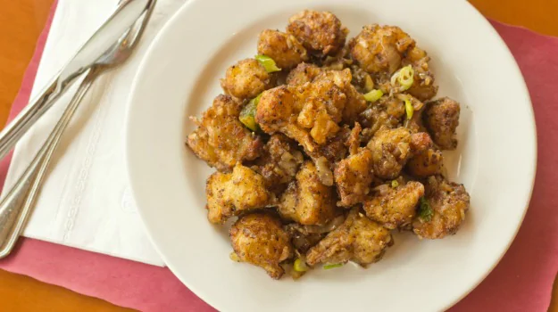Best quick and easy recipes: Chilli gobhi makes for a quick serving for those unannounced guests
Deep fried chunks of paneer simmered in a milk based gravy with loads of khada masalas. Serve with steamed rice. Bursting with delicate flavors, this recipe makes you a meal in minutes!
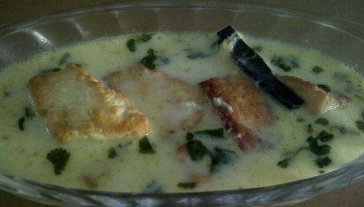Best quick and easy recipes: Deep fried chunks of paneer simmered in a milk based gravy with khada masalas
Yes, that's not a typo! Quick, easy, hassle free cake-in-a-mug with chocolate cookies in just 3 minutes! If you are a cake lover, you'd love this recipe as you can make it in a jiffy.
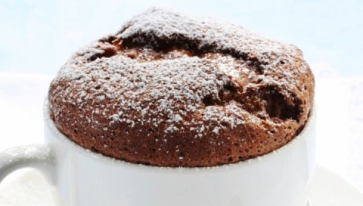Best quick and easy recipes: Quick, easy, hassle free cake-in-a-mug with chocolate cookies in just 3 minutes
An easy one pot meal - egg fried rice with garlicky overtones. Food for thought! If you have leftover rice kept in refrigerator, than making garlic egg fried rice is just perfect for you. Don't think so? Try this recipe out with minimal ingredients.
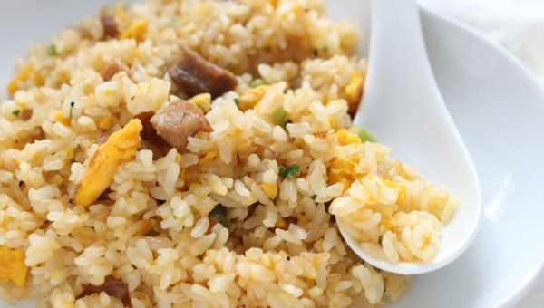Best quick and easy recipes: An easy one pot meal - egg fried rice with garlicky overtones
Dainty little coconut treats to soothe away those sweet cravings! These heavenly sweet coconut balls are made with condensed milk and milk powder. This is exactly what you need to satiate your sweet cravings.
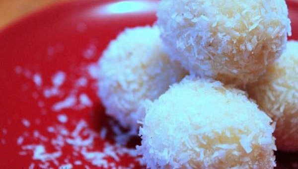Best quick and easy recipes: These heavenly sweet coconut balls are made with condensed milk
An quick mashup of chicken chunks with oriental flavors. If you are a vegetarian you can substitute the chicken with some vegetables or tofu. This recipe makes for a great snack or pre-dinner meal. It is for someone who loves spicy!
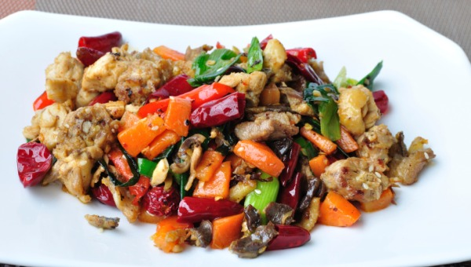Best quick and easy recipes: An quick mashup of chicken chunks with oriental flavors
Transform your leftover rotis into a quirky Mexican wrap, effortlessly. Stuffed with crunchy vegetables and cheese, the wraps are fried crisp in butter.
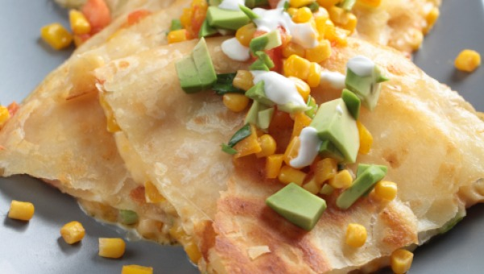Best quick and easy recipes:Transform your leftover rotis into a quirky Mexican wrap, effortlessly.
A speedy appetizer for those for last minute dinner dates! Kebabs made with spinach and peas. Minimal oil is used to pan fry these green beauties.
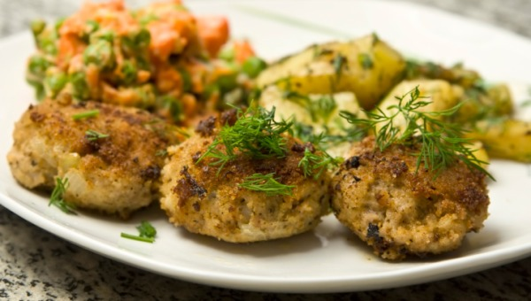Best quick and easy recipes: Matar ke kebabs is a speedy appetizer for those for last minute dinner dates
Chilli paneer is a popular restaurant style Indo-Chinese starter that is great for dinner parties with friends and family. A spicy, tangy paneer recipe that is made from paneer, cornflour, black pepper, maida, onion, green capsicum, et al and cooked to perfection.
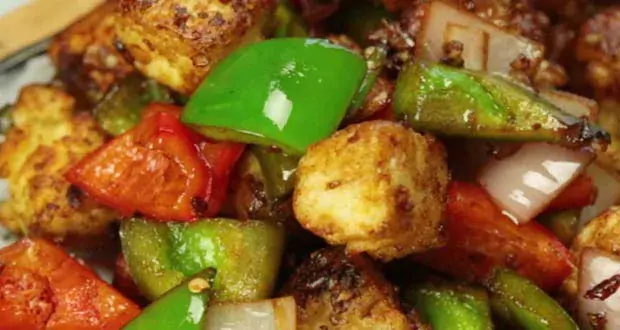Best quick and easy recipes: Chilli paneer is is a popular restaurant style Indo-Chinese starter
The quintessential breakfast of India is poha and we give it a slight twist by adding bread instead of poha in the dish. It is a simple dish that has pieces of bread mixed in masalas and cooked like poha. A perfect and quick dish for kids.
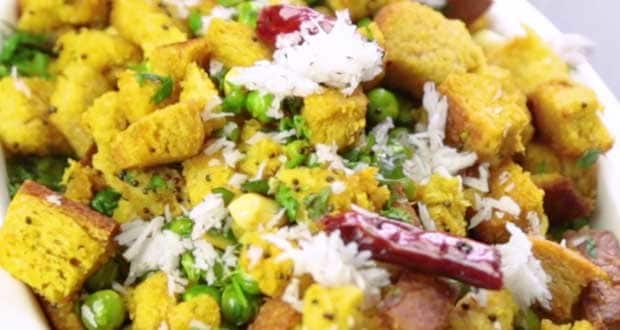Best quick and easy dishes: The quintessential breakfast of India is poha and we give it a slight twist by adding bread